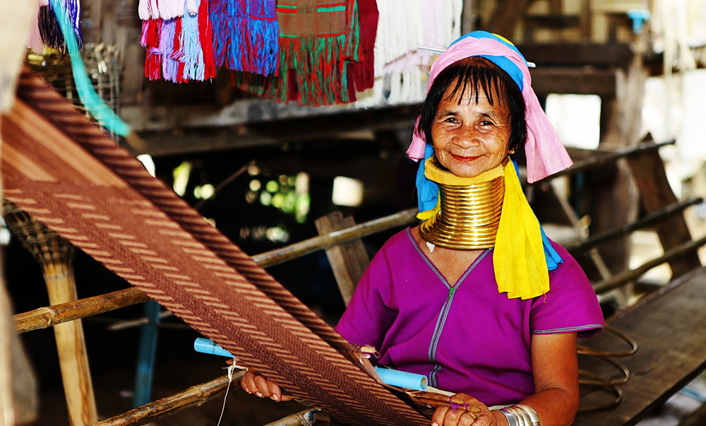

กะยัน กะจ้าง
เป็นคำที่ชาวกะเหรี่ยงใช้เรียกตนเองแทนคำว่า ปาดอง [ภาษาไทยใหญ่]
สันนิษฐานว่ามาจากคำว่า “ป้ายทอง” ที่เกิดจากการพันคอด้วยทอง
โดยทั่วไป เราเรียกชาวกะเหรี่ยงว่า “ยาง” ดังนั้น ชนกลุ่มนี้จึงมีชื่อเต็มคือ“ยางปาดอง”
แลเคอ
เป็นชื่อที่ชาวคะยา (กระเหรี่ยงแดง) ใช้เรียกกลุ่มชนกะยัน
แลเคอมีความหมายว่าตอนบนของลำธาร หรือขุนห้วย เป็นเพราะชาวกะยันอพยพมาจากทางต้นน้ำ

กะเหรี่ยงคอยาว
เป็นคำที่คนไทยใช้เรียกชนกลุ่มนี้
กะเหรี่ยงคอยาวมีความหมายในภาษาอังกฤษว่า
the brass coiling tribe
